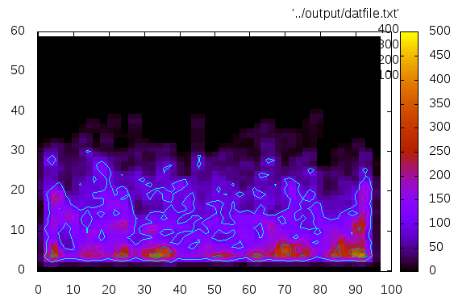
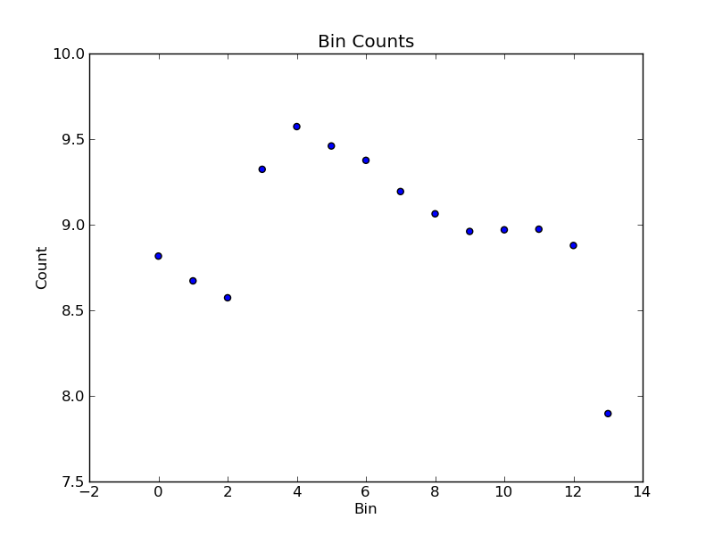
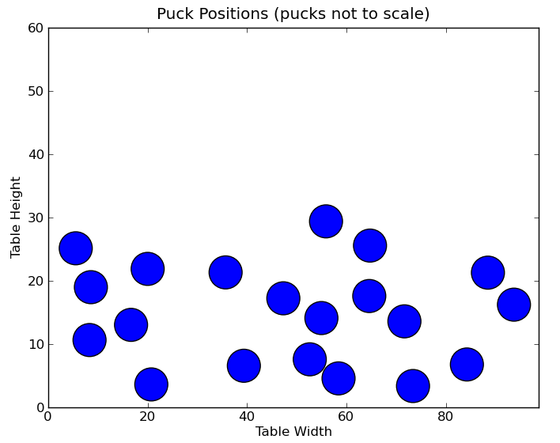

MBS - Pucks
David Wischhusen
Description
This is a simulation of the multibody system from the Phy270 Lab class. The simulation is of pucks on an airhockey table. After the simulation is complete, the pucks positions overtime analyzed and placed in bins to determine various global propeties about the distribution. Various aspects of the simulation are mutable including the evevation of the table, the dimentions of the table, as well as various puck properties.
Output
The simulations has a number of different outputs.

Fig. 1
Heatmap displaying the concentration of pucks.

Fig. 2
Distribution of puck counts per bin.

Fig. 3
Intermediate output showing the positions of the pucks at a single timestep.
Installing
In order to run, the simulation needs a few packages to be installed.Python 2.6 is what the simulation was developed using. Currently the simulation is not compatible with Python3 but should be backwards compatable at least a few version (I havent tested it though).
Matplotlib is used for generating [most] images and is therefore required.
Gnuplot is not required to run the simulation but is required to produce the heatmaps of puck distributions.